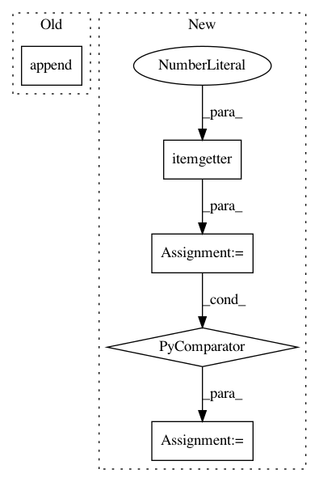

3a0e50cab6a6dd474e90eb99e501b8d1233faa1f,elfi/v2/executor.py,Executor,_run,#Any#Any#Any#,36
Before Change
outputs = []; obs = []
for parent_name in G.predecessors(nodename):
p_attr = G.node[parent_name]
outputs.append(p_attr["output"])
//obs.append(p_attr["observed"])
return fn(*outputs, n=G.graph["n"])
After Change
else:
kwargs[param] = output
args = [a[1] for a in sorted(args, key=itemgetter(0))]
kwargs["n"] = G.graph["n"]
return fn(*args, **kwargs)
In pattern: SUPERPATTERN
Frequency: 3
Non-data size: 5
Instances
Project Name: elfi-dev/elfi
Commit Name: 3a0e50cab6a6dd474e90eb99e501b8d1233faa1f
Time: 2017-02-09
Author: jarno.lintusaari@aalto.fi
File Name: elfi/v2/executor.py
Class Name: Executor
Method Name: _run
Project Name: biocore/scikit-bio
Commit Name: 79abb6cd899d2004bcf95778ebbda06c8b4a0f91
Time: 2015-12-08
Author: mcdonadt@colorado.edu
File Name: skbio/tree/_tree.py
Class Name: TreeNode
Method Name: _set_max_distance
Project Name: regel/loudml
Commit Name: ebb357210205d3ad5fef77e8d33904625fb02a24
Time: 2019-02-10
Author: sebastien.regel@gmail.com
File Name: loudml/loudml/fingerprints.py
Class Name: FingerprintsModel
Method Name: show